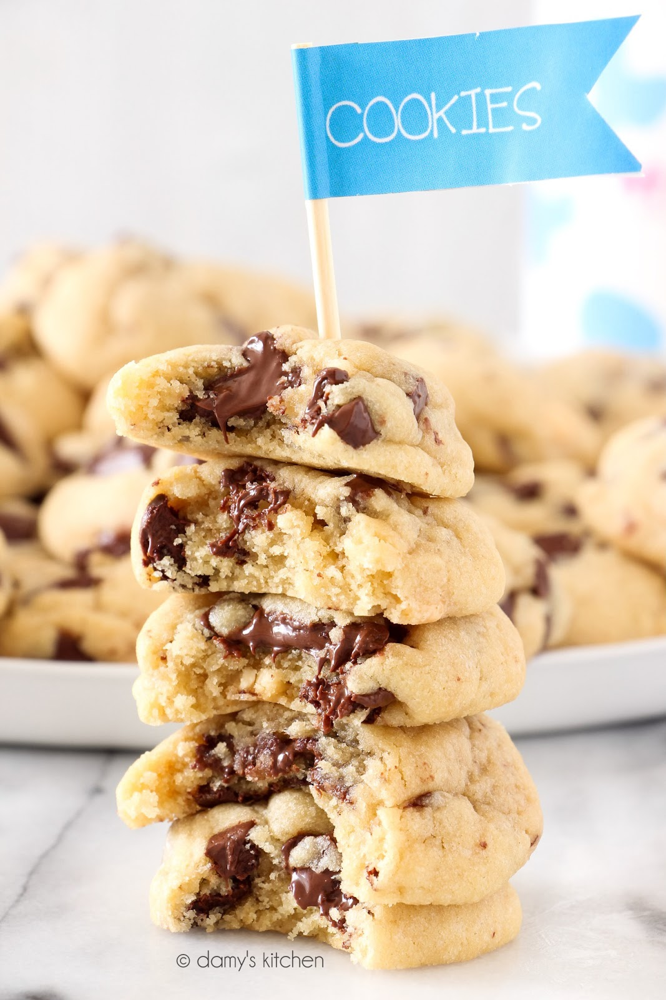

- Kaç Kişilik: 3-4 Kişilik
- Hazırlama Süresi: 20 dakika
- Pişirme Süresi: 10-12 dakika
En İyi Çikolata Parçacıklı Kurabiye Tarifi
Dünyanın en iyi brownie tarifi 'nden sonra şimdi kurabiyelerin en mükemmeli sizinle! :) Bir kurabiye canavarı olarak, her hafta farklı bir tarif deneye deneye kusursuzu yakaladım. Isırdığınızda yumuşacık, içinde eriyen çikolatanın damağa yapıştığı o an.. Kesinlikle hiçbir fotoğraf ve kelime yeterince ifade edemez, mutlaka denenmeli!
Tarif:Damy's Kitchen
